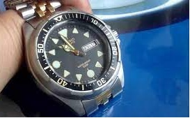
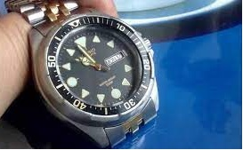
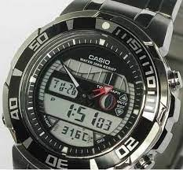
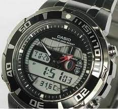
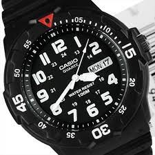
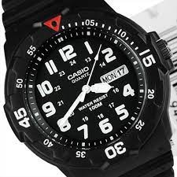

Bienvenido a nuestra colección de relojes Casio by Gustavo Loza
Explora nuestra increíble colección de relojes Casio, incluyendo modelos analógicos y digitales de varios años y lugares de origen.
 

 


 
